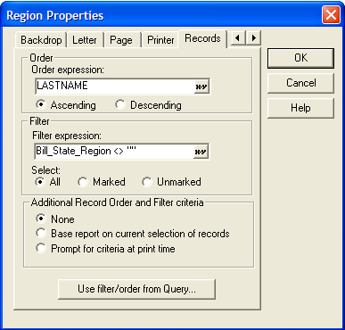

Ordering and Selecting Records - Letters
There are two ways to specify the records to print and the order in which they print. You can either save the criteria in the Letter layout, or prompt the user for the criteria at print time. These options are not mutually exclusive, so you can choose to save order and selection criteria, and then make changes to the criteria just before the Letter prints.
To save order and selection criteria in a Letter layout, select Letter > Properties > Records.

Selecting Records to Print
When the Region Properties dialog box appears, click the Records tab. In the Order Expression box, enter an order expression. In the Filter Expression box, enter a filter expression.
The Region Properties dialog box also lets you choose only marked or unmarked records, by clicking the Marked or Unmarked radio buttons.
For the Additional Record Order and Filter Criteria, you can choose whether to base record selection on the current selection of records, or prompt the user at print-time.
The Use filter/order from Query button lets you select filter/order criteria from a previously defined query.
 TIP : You can also
use Xbasic to order/select records. For example by using PRINT_LETTER( <span class=Argument>Letter_Name</span>, <span class=Argument>Filter_Expression</span>, <span class=Argument>Order_Expression</span> ).
TIP : You can also
use Xbasic to order/select records. For example by using PRINT_LETTER( <span class=Argument>Letter_Name</span>, <span class=Argument>Filter_Expression</span>, <span class=Argument>Order_Expression</span> ).